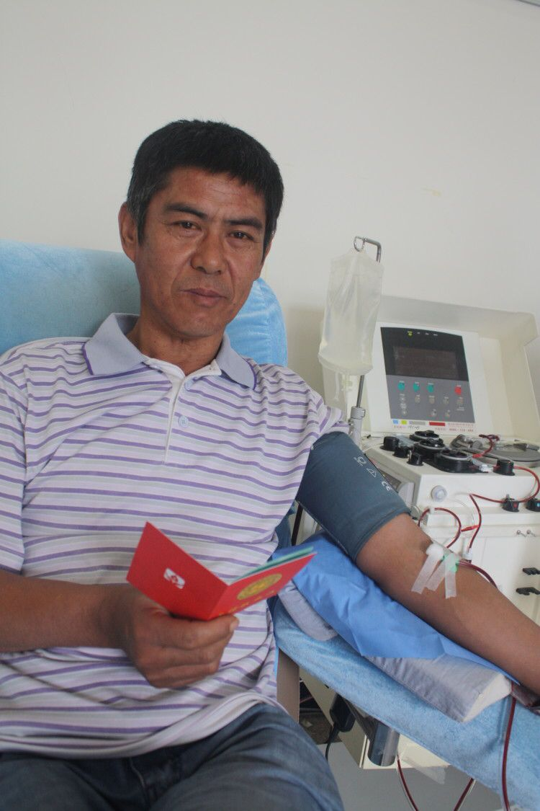

志愿者的故事
1）感动河北十大人物---张瑞娟
说起张瑞娟张阿姨，那可是我们这里鼎鼎大名的大明星，因为印有张阿姨的大幅照片已经成为我们城市闹市区一道靓丽的风景，她是我市无偿献血的明星，更是这座城市最美丽的女人。
张瑞娟阿姨原来是一名纺织女工，是厂里的老先进。1995年，她和在同厂当工人的丈夫先后下岗了，夫妻俩都感觉自己成了没用的人。是几个月后的再一次献血，让她想到，我还有用。这个朴素的信念成了她献血的动力和贫困生活的支撑。2001年之后，每隔半年献血一次。2005年初，她加入了成分血献血队伍，此后的二十多年中她月月到血站献成分血，风雨无阻。为了救人，张瑞娟阿姨已经连续六年在血站过春节了。如今，张阿姨参加无偿献血已有22年，累计献血达15万多毫升，约300多斤，相当于30个成人全身血量。其中，捐献血小板200多份，帮助两百多人恢复了健康。她的丈夫献血7万多毫升，大女儿献血1万多毫升，家庭的总计献血量超过20万毫升。
张阿姨还是我们献血志愿者分队的队长，在她的影响下，她的外甥、邻居、朋友，许多人也加入到无偿献血的行列中。许多献血者表示，是这位下岗女工的影响，使自己体味到了奉献的快乐。
张阿姨是感动河北十大人物，专家给她的颁奖词是这样说的，“经济上，她是一个贫困者，夫妻下岗多年。但她又是一个真正的富有者，二十年来，她坚持无偿献血，成为真正的“献血大王”，同时，在她的影响下，许多人都加入了无偿献血的行列。一个来自社会最底层的下岗女工，用自己滚烫的血液阐释着什么是富有，什么是贫穷。”
张阿姨说：“ 从第一次的献血至今我已坚持了二十几年，但从未想过今后会怎样，只是觉得献血能救人是好事，自己应该做。我是名下岗职工，虽说在经济上不能帮助别人，但是还能用自己的血去帮助别人，我就觉得很开心。”
朴实的话语，温和的笑容，这就是我身边的志愿者、献血英雄张阿姨，我为我们这座城市有张阿姨这样的人而感到骄傲和自豪。她用自己的热血挽救了许多陌生人的生命，以她的实际行动让更多的人看到了人性的光辉，看到了爱的永恒。
2）“信义父亲”王志勇
王志勇叔叔是我们献血志愿者广宗分队的队长，同时他还有一个更广为人知的名字---“信义父亲”。他是“中国好人”、河北省十大新闻人物、邢台十大道德楷模、我市首届道德模范、中央电视台《新闻直播间》用十分钟时间专门播出他的事迹。他的事迹感动了社会各界，被网友誉为“最美父亲、信义父亲”。
这里还有一个伤心的故事。
2014年初，王叔叔的女儿王倩倩被确诊为白血病。为了给女儿治病，王叔叔花光了家里的全部积蓄，可要做骨髓移植还需30万元手术费。就在王叔叔一筹莫展之际，亲朋好友、邻里街坊、甚至陌生网友纷纷向他伸出援手，为他捐款27万余元。
虽有众多爱心汇聚，倩倩还是没有等到骨髓移植手术实施。倩倩离世前，守在她身旁的王叔叔发现，倩倩似乎想要说话。他赶紧凑到女儿跟前，女儿声细如蚊。“爹，人们给我捐的爱心款，都要还给他们，还能再帮助别的人。再有就是你要继续参加献血这样的好事。”之后的几天，倩倩陷入了昏迷，再也无法说话。那成为女儿最后的遗言。
好心人捐助的27万元钱，治疗已经花费了12万，这余下的15万元，他要一一归还。当他找到乡邻时，许多人都震惊地说：“志勇，你家一点积蓄都没了，这钱怎么还能让你还？”面对乡亲们的拒绝，王叔叔苦口婆心劝说他们收下。他说：“大家伙儿在我们需要时无私帮助，现在孩子不需要这笔钱了，我理应还给你们。”
尽管治疗已经花去善款中的12万元，这钱也要还上。王叔叔的家中已经没有积蓄，在当地政府的帮扶下，他开始加工自行车配件维持生计。一有了收益，他就张罗还钱的事，现在已经还了1万多元。
2014年10月2日，倩倩过世的第九天，王叔叔就来到了血站，他要完成女儿的第二个遗愿——献血。由于过度劳累，身体条件不符，他一个月内三到血站，终于验血合格，成功捐献了血小板。
女儿是懂事的女儿，父亲是感恩的父亲。父女俩感动了社会，源源不断地输送着正能量。
2014年10月，王叔叔荣登了“邢台好人”榜。15年2月，首届邢台市道德模范名单公布，王志勇这个温暖人心的名字赫然在列。专家的点评是：病女生前留遗愿，爱心捐款要偿还。砸锅卖铁何所惧，但留信义在人间。
“退还爱心善款这事儿本来就是我应该做的，现在却引来这么多好心人帮助。我想好了，这份爱心要在我手里继续传递。”这就是王志勇叔叔朴实的话语。
如今，王叔叔已经成为我们志愿者队伍的分队队长，累计捐献血小板50余份，并加入中华骨髓库造血干细胞志愿者。分队组织献血80余次，献血量达到23万cc，参加献血达到近千人次，利用微信和QQ群里的宣传无偿献血知识，让大家能看得见、听得到无偿献血的好处，并印制了献血六大好处，发放到各乡镇及农村，使更多群众积极参加到无偿献血的队伍里来帮助更多需要帮助的人。
3）最美志愿者--刘旭红
刘旭红，她是一位身材标致、气质优雅的阿姨。刚接触到刘阿姨的时候，不知道为什么，天气已经很热了，她却一直带着口罩和帽子，感觉怪怪的。后来，问起了妈妈，妈妈才告诉我，刘阿姨是一名晚期肺癌患者，因为化疗，头发脱落，所以一直带着帽子。抵抗力弱，所以带着口罩。
后来，慢慢的和刘阿姨接触多了，我才发现刘阿姨真是一个坚强的人。她是我市火车头无偿献血志愿者分队队员。身患绝症，是需要别人照顾的人，却每次都积极参加无偿献血各项公益活动和文艺演出。她跳舞、唱歌样样拿手，可是每次结束演出，我都看到她偷偷躲到角落里，疲惫的擦着额头渗出的汗水。刘阿姨说：“每当我参加志愿活动的时候，我就忘记了我是个病人，我只想多影响一个人参加献血，就能多挽救一条生命。我就是个有价值的人！”2016年刘阿姨获得年度感动邢台网络人物。